| データ解析のための統計モデリング入門 |
| データ解析のための統計モデリング入門 |
尤度を最大化する  を求めたいとする。このとき、
を求めたいとする。このとき、
初期値を設定する 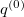
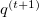 の候補として、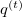の右隣か左隣の値をランダムに選び、更新値の候補 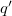 とする
対数尤度を評価し、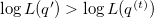 なら、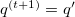 とする
上記のアルゴリズムに、
対数尤度を評価し、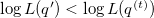 であっても、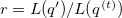 の確率で とする
を追加する。
もし詳細釣り合い条件
| 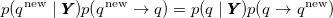 | (8.32) |
が成り立っていれば、
| 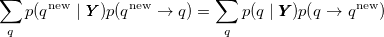 | (8.33) | ||
| 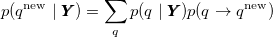 | (8.34) |
となる。 ただし、
| 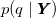 | 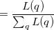 | (8.35) | ||
 |
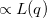 | (8.36) |
なる定常分布であるとする。
補足
更新によって尤度が改善されない場合について考えると、
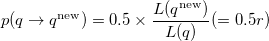 (8.37) 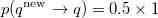 (8.38) を整理すると、
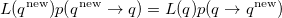 (8.39) となる。
補足ここまで
初期値から一定期間を経て のサンプリングが安定してくれば、それを定常分布からのサンプリングとみなすことができる。
メモ
更新値を受容する確率に従って
メモここまで
| データ解析のための統計モデリング入門 |